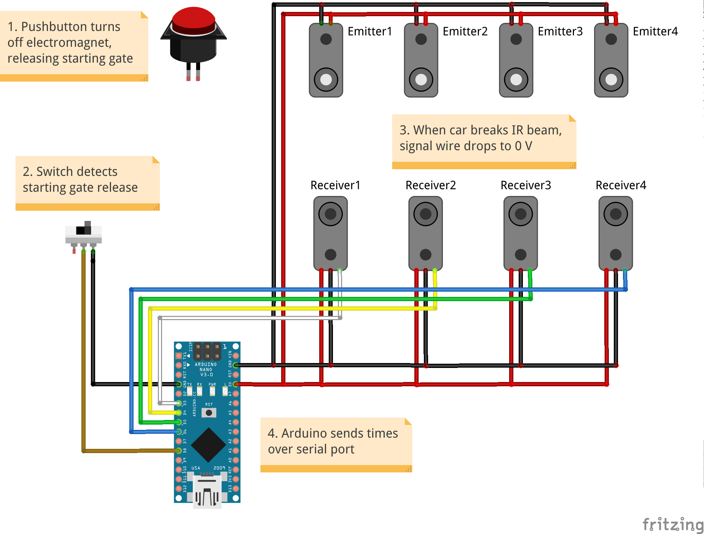
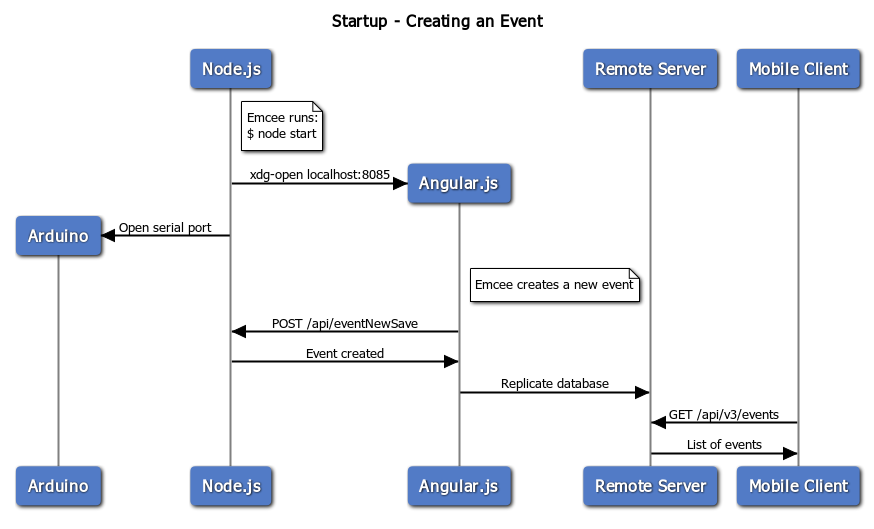
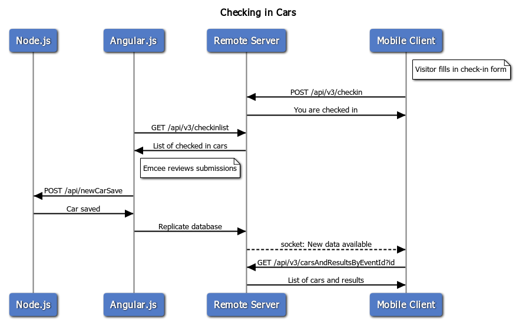
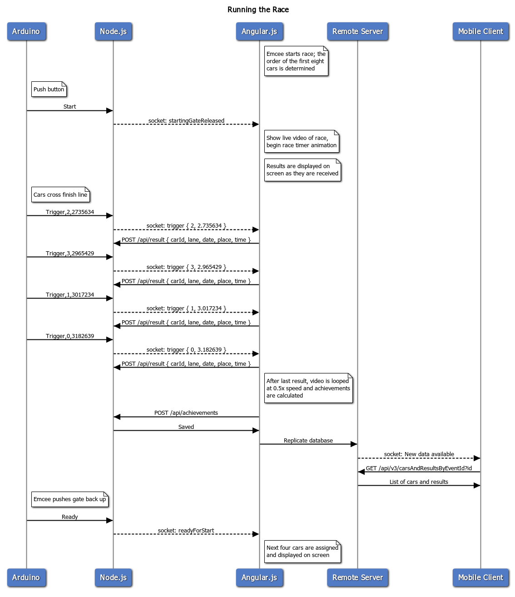

The timing system is powered by an Arduino Nano. There is a contact switch to detect the moment the starting gate is released, and four infrared break beam sensors to detect when each car crosses the finish line. As each car breaks the IR beam, the Arduino transmits to the computer the lane number and number of microseconds (1/1,000,000 second) from start to finish. In practice, the Arduino achieves only about 1/20,000 second resolution, so we only display four decimal places in the results.

Timing system electronics
The laptop runs a Node.js server which receives input from the Arduino. When the computer receives the results from the Arduino, it saves them in a local database.
The Node.js server also serves an Angular.js webpage which serves as the front-end of the race manager. This webpage performs the bulk of the work in organizing the race. It is used to check-in cars, run the race, calculate results, and show instant replays.
In the latest version of our software, the Angular.js webpage is responsible for uploading results online. Although it is simpler to have the Node.js server perform the uploading (you don't have to worry about cross origin resource sharing, for example), having the webpage do it enables the server to run on a separate device without an internet connection. (Currently it runs on my laptop.) Eventually, I would like to move the server onto a Raspberry Pi, which would allow any laptop to be used to run the derby. With a second backup Raspberry Pi, this would provide full redundancy on the computer side of things.
The race management software which runs on the Angular.js webpage assigns cars to races from slowest to fastest. This means that similarly performing cars race together, making the races more exciting and increasing the chance that more cars will win a race. It also means the four fastest cars usually race together in the last race.
Results are replicated onto this website. Visitors can view live results from any current or past event, along with pictures of the cars.
A unique feature of our software is that cars are photographed during check-in. As of August 2019, this can be done entirely online from any mobile device. The pictures of the cars and the participants' names are shown on the screen during check-in. This has a few incredible advantages: 1) it's not required to assign numbers to the cars, 2) the emcee (and audience) can quickly check that all cars are in the correct lanes before a race, 3) the emcee can address a participant by name if he/she has their car in their hand, and 4) pictures of the cars can be displayed on the big screen during the awards ceremony.

After the emcee creates an event, website visitors can view the event at this website.

Website visitors check in cars online. Then, the emcee reviews each submission and adds the car to an event. Visitors can then see the checked-in cars online.

When the emcee starts the race, the next cars to race are shown on the screen. When the starting gate is released, the Arduino starts a timer. When the cars finish, the results are saved, displayed on the screen, and uploaded online where website visitors can view them.
{kind=link}
{kind=link}
{kind=link}
{kind=link}